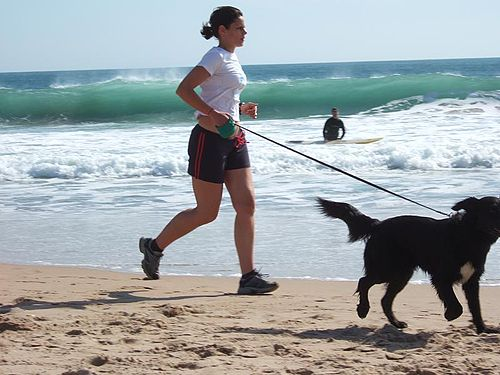
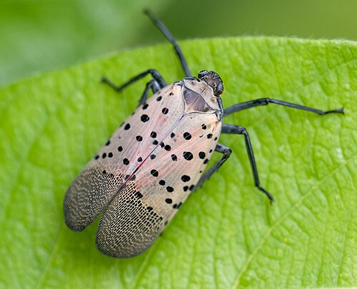
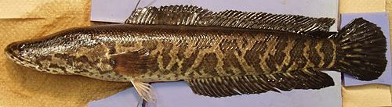

Prevent the Spread!
Invasive species often spread unintentionally through human activity—especially when outdoor gear, vehicles, or pets carry seeds, eggs, or plant fragments into new areas.
To prevent their spread, visitors to parks and natural areas should follow a few key practices.
When boating

To prevent the spread of aquatic invasive species in New York, boaters must follow the Clean,
Drain, Dry protocol:
• Clean: Remove all mud, plants, and animals from boats, trailers, and gear. Use hot water
or visit a decontamination station if needed.
• Drain: Empty all water from compartments like bilges, live wells, and ballast tanks
before leaving the launch site.
• Dry: Let all equipment dry completely—ideally for 5–7 days—before using it in another
waterbody.
• Disinfect: If drying isn’t possible, soak gear in water at least 140°F for 30 seconds.
This process is required by law in the Adirondack region and strongly encouraged statewide to
protect lakes, rivers, and native wildlife.
With Firewood
To prevent the spread of invasive pests, don’t move untreated firewood in New York State:
• Buy local: Always purchase firewood near where you’ll burn it—ideally within 10 miles.
• Use certified heat-treated wood: Look for firewood labeled as treated to kill pests.
• Leave it behind: Don’t bring leftover firewood home or to another location.
• It’s the law: Moving untreated firewood more than 50 miles is illegal in New York.
Invasive insects and diseases often hitchhike in firewood, threatening forests and native species
statewide.
With Aquariums and Pets:

To prevent the spread of aquatic invasive species, aquarium and pet owners in New York should
follow these key guidelines:
• Never release pets or plants: Don’t dump aquarium contents into local waterways or
flush them down drains.
• Choose responsibly: Buy non-invasive species and avoid those banned or regulated in
New York.
• Dispose properly: Freeze or bag unwanted plants and animals before placing them in
the trash.
• Spread the word: Educate others about the risks of releasing aquarium species into the
wild.
Even small releases can cause big ecological damage—responsible pet ownership helps protect
native habitats.
When Camping, Hiking, Hunting, and Spending Time Outdoors
To prevent the spread of terrestrial invasive species in New York, follow these key practices:
• Stay on trails: Avoid disturbing soil and vegetation that may harbor invasive seeds or
pests.
• Clean gear and vehicles: Remove mud, seeds, and plant material from boots, bikes,
pets, and equipment before and after outdoor activities.
• Don’t move firewood: Buy firewood locally and use certified heat-treated wood to
avoid transporting invasive insects.
• Use native plants: Choose non-invasive species for landscaping and habitat restoration.
• Report sightings: If you spot a suspected invasive species, report it to iMapInvasives or
local authorities.
These simple actions help protect New York’s forests, parks, and natural areas from ecological
damage.
Terrestrial Invasive Species
Asian Longhorned Beetle
Threatens: Hardwood forests; impacts agriculture and tourism.
Targets: Maple, birch, elm, ash, poplar, horsechestnut, willow.
Signs of Infestation: Round exit holes, sap from egg-laying sites, sawdust at tree base.
Beech Leaf Disease
Threatens: Native and ornamental beech trees.
Cause: Linked to a nematode; spread still under study.
Signs of Infestation: White, fuzzy coating on leaves and branches.
Emerald Ash Borer

Threatens: Ash trees; causes ecological and economic damage.
Signs of Infestation: D-shaped exit holes, thinning canopy, serpentine galleries under bark.
Giant Hogweed
Threatens: Native vegetation; poses health risks to humans.
Signs of Infestation: Large white flower clusters, purple-blotched hollow stems.
Hemlock Woolly Adelgid
Threatens: Hemlock trees; causes needle loss and decline.
Signs of Infestation: White woolly masses on underside of branches.
Laurel Wilt
Threatens: Trees in the laurel family; fatal fungal disease.
Signs of Infestation: Rapid leaf wilt, discoloration, and tree death.
Oak Wilt
Threatens: Red oaks; spreads via root grafts and beetles.
Signs of Infestation: Leaf discoloration, wilting, premature drop.
Southern Pine Beetle
Threatens: Pine forests; burrows under bark and kills trees.
Signs of Infestation: Pitch tubes on bark, boring dust.
Spongy Moth
Threatens: Oaks and hardwoods; larvae defoliate trees.
Signs of Infestation: Egg masses on bark, visible caterpillars in spring.
Spotted Lanternfly

Threatens: Grapes, hardwoods, fruit trees; impacts agriculture and tourism.
Signs of Infestation: Spotted wings, honeydew secretion, sooty mold.
Aquatic Invasive Species
Hydrilla

Threatens: Aquatic ecosystems; blocks sunlight and crowds out native plants.
Signs of Infestation: Long stems with whorls of 5 leaves, tubers in sediment.
Starry Stonewort

Threatens: Fish spawning areas and native vegetation.
Signs of Infestation: Bright green star-shaped bulbils, thick mats of algae.
Water Chestnut
Threatens: Waterways; reduces oxygen and biodiversity.
Signs of Infestation: Floating leaf rosettes, spiny nuts, dense surface coverage.
Northern Snakehead

Threatens: Native fish; aggressive predator.
Signs of Infestation: Long body, sharp teeth, can breathe air and move on land.
Sea Lamprey
Threatens: Salmon and trout; parasitic feeder.
Signs of Infestation: Eel-like body, suction-cup mouth with circular rows of teeth.
Spiny Waterflea
Threatens: Native zooplankton and fish food chains.
Signs of Infestation: Tiny crustacean with long spiny tail, clumps on fishing lines.
Round Goby
Threatens: Native fish and benthic ecosystems.
Signs of Infestation: Fused pelvic fins, mottled coloring, aggressive behavior.